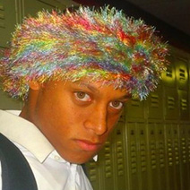

Jared Arrington
- Voice Part: Baritone
- Major: History, Education
- Hometown: Orange County, VA
- Yes To: rugby, beveling, Celine Dion, lemons (lots), Scrubs
- No To: the mixing of meats, lying once a day, and skipping church on Sunday